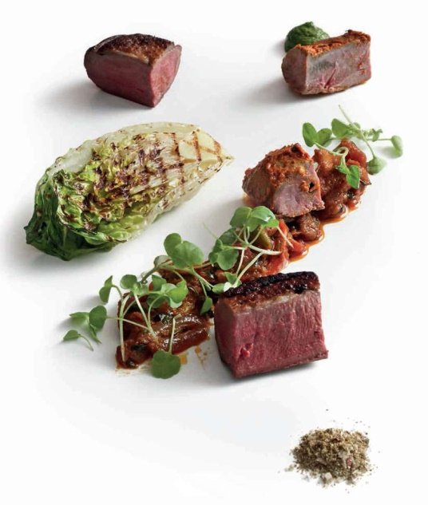

Duck two ways (Duck do roopiya)

The two cooking techniques in this recipe are totally different, but the flavours they produce work well together – the smoky flavour of the duck tikka complements the hot-and-sour flavours of the duck jalfrezi. The actual cooking is straightforward once you have all the prep work completed.
For the duck tikka
For the duck jalfrezi
To serve
To begin the duck tikka, rub the marinade all over the skinned duck breasts and leave to marinate in the fridge for 2–3 hours.
When the duck tikka finishes marinating, preheat the oven to 200°C.
While the oven is coming up to temperature make the sauce for the duck jalfrezi. Heat the sunflower oil in a wok, add the ginger, cumin seeds and black pepper, and sauté over a medium heat until the spices crackle. Add the green chillies and onion and continue sautéing for 3–5 minutes until the onion is translucent. Add the ground spices and sauté for a further minute. Add the red and green peppers, onion masala gravy, tomato purée and as much stock or water as needed to loosen the mixture, then stir-fry over a high heat for 3–5 minutes until the peppers are tender. Cover and keep hot while the duck breasts cook.
Place the marinated skinned duck breasts for the duck tikka recipe in a roasting tray lined with a non-stick oven mat and roast for 10 minutes, or until they feel firm when pressed. (Alternatively, cook them under a preheated grill for 10 minutes, turning once, or until they feel firm.) Leave to rest for 5 minutes, covered with foil.
Meanwhile, to finish the duck jalfrezi, heat a large ovenproof frying pan over a medium heat. Add the unskinned duck breasts, skin side down, and sear for 5 minutes, or until the skin is brown and crispy and all the fat has been rendered out. Use a large spoon to remove the fat from the pan as it accumulates to prevent the breasts from frying. Sprinkle the breasts with salt. Transfer to the oven and roast for 4 minutes, or until they feel soft when pressed for medium rare. Leave to rest for 5 minutes, covered with foil.
Just before serving, heat a ridged cast-iron griddle pan over a high heat until it is very hot. Brush the cut edges of the lettuces with olive oil and sear, cut sides down, for 2–3 minutes until they are tender and lightly browned.
At the same time, add any juices from the resting duck breasts to the jalfrezi sauce and reheat. Add the fresh coriander, lemon juice, garam masala and salt to taste.
Cut the duck breasts into bite-sized pieces. Serve a selection of the skinned and unskinned breasts with the jalfrezi sauce, with the lettuces, chutney and spice salt alongside. At the restaurant we also serve naans with this dish.